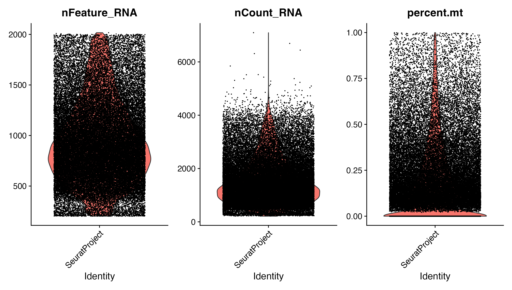
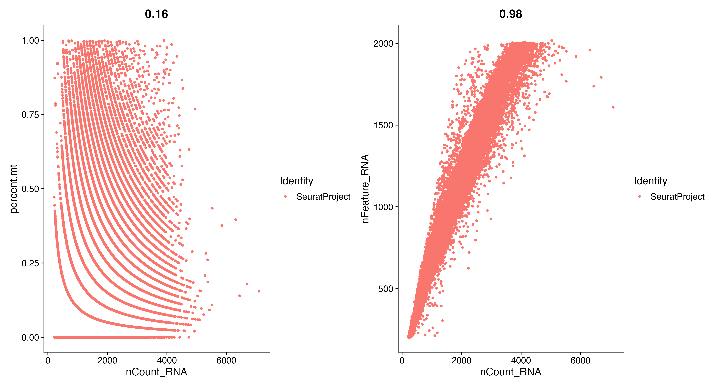
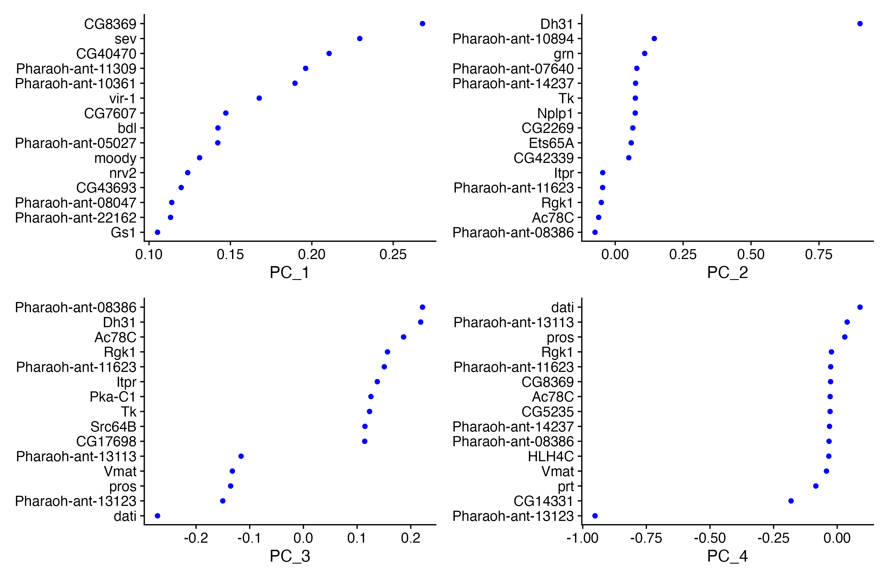
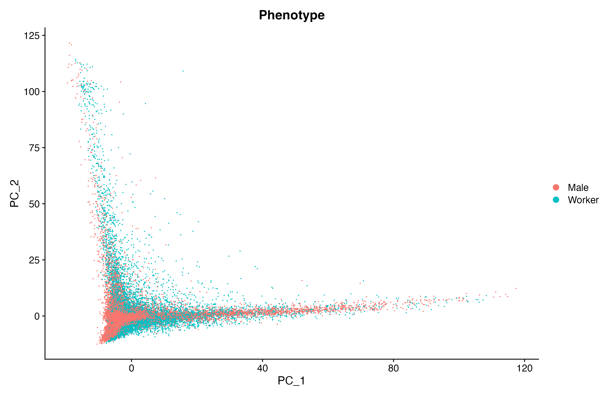
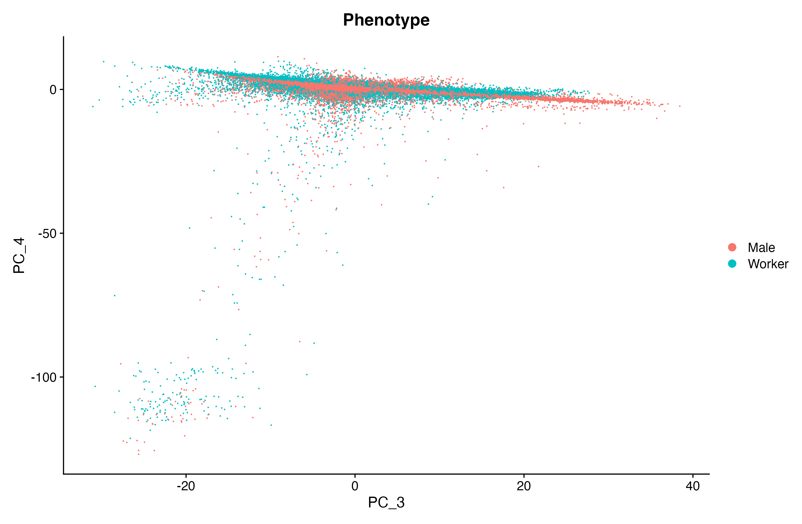
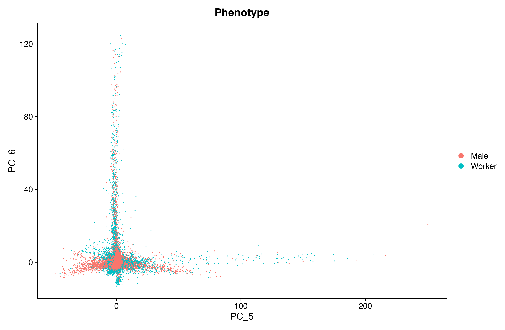
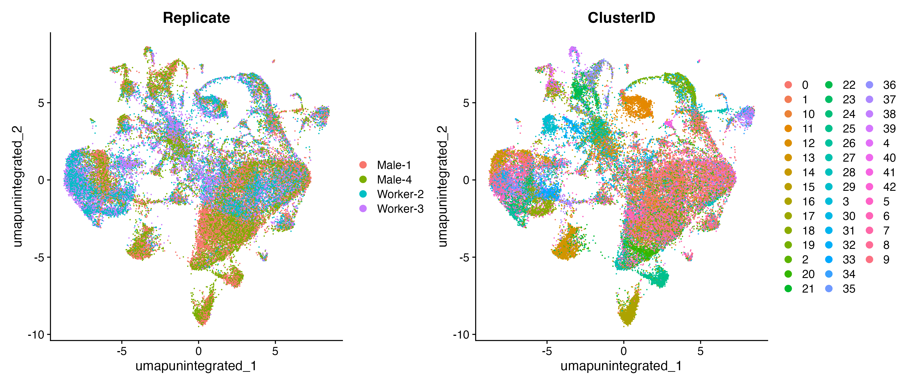
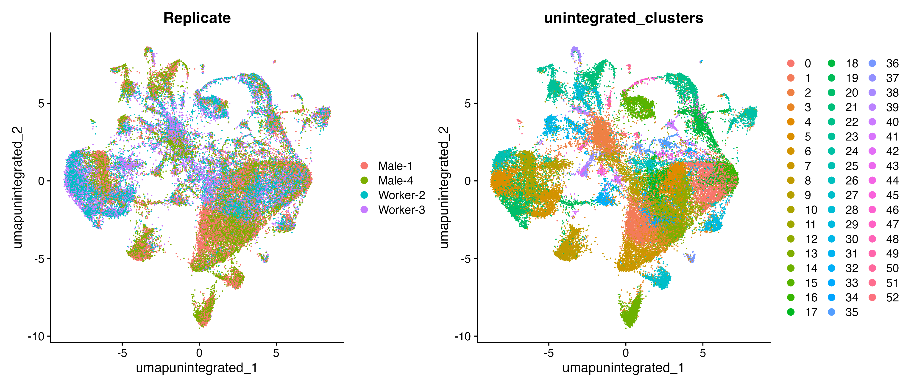
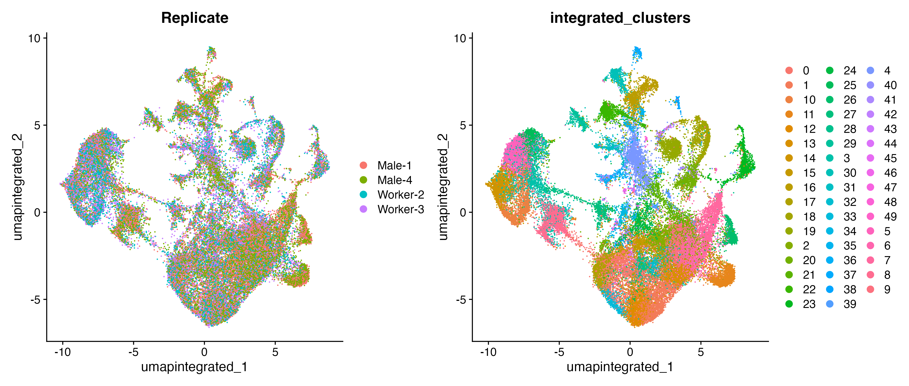

11 Normalization, dimension reduction and integration
12 Learning Objectives
| Learning Objectives: |
| Conduct quality control analysis of raw data specific to single-cell RNA-seq. |
| Normalize cell counts |
| Integrate data from multiple samples |
| Use visualizations to explore and validate findings |
In the previous chapter we explored raw single-cell RNAseq data. We covered how our library is structured with cell barcodes, UMIs and the implications for 3’ sequencing data. We saw how we can use STARsolo to process the reads, assigning them to cells and deduplicating them by UMI. We explored the output files and their structure as well. This may seem like getting into the data in excessively gritty detail, especially as the next analysis steps are pretty complex, but it can be helpful.
Imagine a case where you have inserted a gene construct into an organism you’re studying and you want to see in which cells it is expressed. You’ve added the construct to your reference genome and a corresponding entry in the GTF file. You process the data down to the gene x cell count matrix, but discover there appears to be no expression from your construct. Why? Is there really no expression? Has something gone wrong with the mapping or counting? Understanding the data and processing steps well enough to spot check the data and output files for each step can help work out enigmas like this.
In this chapter we’re going to move forward and analyze the gene x cell count matrix. As we saw in the last chapter, the total size of this raw dataset is 4.2TB. As the authors have kindly provided their count matrix in FigShare, we’re going to go ahead and use that rather than churn through all that data.
Additionally, although we strive to use full datasets in this course so that students experience the challenges of working with full datasets, in this case we’re going to work with only 4 of their 17 samples. The reason for this is we’re going to work in RStudio, and the 200k cells they provide requires more memory than most students will have on their local machines, and getting RStudio working on the Xanadu cluster is a bit fiddly.
If you want to analyze the full dataset on Xanadu, you can follow this guidance for running the RStudio GUI on a compute node. Be warned that while the instructions work, they are confusing, somewhat complicated, and poorly formatted (we’re working on a new version!). We recommend trying it only after you get this working on your local machine.
12.1 The count matrix
Using STARsolo we produced a count matrix in sparse format. That means that essentially it left out all zero count cells to save space. The data provided by Li et al. are in a standard square matrix format with a header giving the information for each cell. Let’s look at the first 20 lines and 5 columns:
zcat data/Li_etal_2022/Mpha.umi.geneMatrix.gz | head -n 20 | cut -f 1-5 # CellID CATGGCAGCGTATTACTCTC_3_1_3 TTCTCACTCCGTGTCACGAG_3_1_3 TCGTGACAAGACAGTTCATT_3_1_3
# Library Gyne_R4_C3 Gyne_R4_C3 Gyne_R4_C3
# Phenotype Gyne Gyne Gyne
# Replicate Gyne-1 Gyne-1 Gyne-1
# ClusterID 19 1 0
# nGene 1998 1999 1945
# nUMI 5471 4642 4507
Pharaoh_ant_01665 Ocho 0 0 0
Pharaoh_ant_05704 Pharaoh_ant_05704 0 0 0
Pharaoh_ant_00162 Pharaoh_ant_00162 0 0 0
Pharaoh_ant_04035 Pharaoh_ant_04035 0 0 0
Pharaoh_ant_18340 CG5188 0 0 0
Pharaoh_ant_10781 Not10 0 0 0
Pharaoh_ant_10338 chif 0 0 3
Pharaoh_ant_09487 fsd 0 0 0
Pharaoh_ant_08623 Pharaoh_ant_08623 0 0 0
Pharaoh_ant_13653 kappaB-Ras 0 0 0
Pharaoh_ant_09673 Pharaoh_ant_09673 0 0 0
Pharaoh_ant_20261 Pharaoh_ant_20261 0 0 0
Pharaoh_ant_06035 Pharaoh_ant_06035 0 0 0The first 7 lines beginning with # are header lines. Following that is the count table. The first two columns of the header are # and the type of data in the row. The first two columns of the count table are the gene ID from the GTF, and the gene symbol, if one is given. The rest of the columns in the header are metadata for the cell in that column, and the rest of the columns in the count matrix are the counts for each cell. So:
| # | CellID | CATGGCAGCGTATTACTCTC_3_1_3 | TTCTCACTCCGTGTCACGAG_3_1_3 |
| # | Library | Gyne_R4_C3 | Gyne_R4_C3 |
| # | Phenotype | Gyne | Gyne |
| # | Replicate | Gyne-1 | Gyne-1 |
| # | ClusterID | 19 | 1 |
| # | nGene | 1998 | 1999 |
| # | nUMI | 5471 | 4642 |
| Pharaoh_ant_01665 | Ocho | 0 | 0 |
| Pharaoh_ant_05704 | Pharaoh_ant_05704 | 0 | 0 |
| Pharaoh_ant_00162 | Pharaoh_ant_00162 | 0 | 0 |
| Pharaoh_ant_04035 | Pharaoh_ant_04035 | 0 | 0 |
| Pharaoh_ant_18340 | CG5188 | 0 | 0 |
| Pharaoh_ant_10781 | Not10 | 0 | 0 |
| Pharaoh_ant_10338 | chif | 0 | 0 |
| Pharaoh_ant_09487 | fsd | 0 | 0 |
| Pharaoh_ant_08623 | Pharaoh_ant_08623 | 0 | 0 |
| Pharaoh_ant_13653 | kappaB-Ras | 0 | 0 |
| Pharaoh_ant_09673 | Pharaoh_ant_09673 | 0 | 0 |
| Pharaoh_ant_20261 | Pharaoh_ant_20261 | 0 | 0 |
| Pharaoh_ant_06035 | Pharaoh_ant_06035 | 0 | 0 |
We can see that for each cell we are helpfully given the cell barcode, the library the cell came from, the replicate, the phenotype, how many genes have non-zero counts, and the total number of UMIs from the cell.
12.2 Getting set up with Seurat
We’re going to analyze our data with the R package Seurat. You can find the documentation for Seurat here. There have been major changes to the workflows over the years. Documentation and tutorials persist for older versions and different approaches to the data, so be aware of that. In ISG5302 you will be assigned to read this paper to get a sense of how this can impact the outcome of analysis. It seems particularly salient in the current era of single-cell analysis, but it’s certainly a general issue in computational biology.
In any case, this material proceeds assuming version 5.2.0. The instructions for installation can be found here. You may run into problems with dependencies failing to be installed and the entire installation then failing. Try installing failed dependencies from CRAN or bioconductor individually and then re-trying the Seurat installation. It may also be helpful to make sure you’re updated to the latest version of R
12.2.1 Subsetting the data
As we mentioned above, we’re going to work with a subset of the data. You can find that subset on Xanadu here: /core/cbc/gdafiles/ISG5312/scRNAseq_data/fourSampleSubset.Rds. In this section we’ll show you how we created that subset, but you can just download it and get started with the next section.
The paths assume the work directory is in a subdirectory of /scripts.
Load the following packages:
library(Seurat)
library(tidyverse)
library(data.table)
library(Matrix)First we’ll read in just the count data (skipping the 7 metadata lines with skip =7). We’re using fread from the data.table package because it’s faster.
expr_matrix <- fread("../../data/Li_etal_2022/Mpha.umi.geneMatrix.gz", skip=7, tmpdir=".")The first two columns are gene identifiers, so we’ll pull those out:
gene_ids <- expr_matrix[,1:2] %>% as.data.frame()Now we’ll grab the metadata from the first 7 lines.
meta_data <- fread("../../data/Li_etal_2022/Mpha.umi.geneMatrix.gz", nrows=7, tmpdir=".", header=FALSE)We’re going to convert the metadata to a data frame and remove the first column (it was just #s) and add rownames (the first non-# column).
meta_data <- as.data.frame(meta_data[, -1])
rownames(meta_data) <- meta_data[, 1] # Use first column as column namesNow we’ll remove the first column (we used it as rownames) transpose the data frame and convert the UMI and gene counts to numeric:
meta_data <- t(meta_data[, -1]) %>% as.data.frame()
meta_data[,6] <- as.numeric(meta_data[,6])
meta_data[,7] <- as.numeric(meta_data[,7])Next we’ll create a matrix of counts with gene symbols as row names and cell barcodes as column names.
expr_matrix <- as.matrix(expr_matrix[,3:206369])
rownames(expr_matrix) <- gene_ids[,2]
colnames(expr_matrix) <- meta_data[,1]Seurat does not want any _s in gene names, so we need to do a quick conversion:
gene_ids[,1] <- str_replace(gene_ids[,1], "_", "-")
gene_ids[,2] <- str_replace(gene_ids[,2], "_", "-")Now we’re going to create a Seurat object with our count matrix:
seurat_obj <- CreateSeuratObject(counts = expr_matrix)And add the metadata:
seurat_obj <- AddMetaData(seurat_obj, metadata = meta_data)Now we can subset the object. We’re going to pick four samples, two workers and two males:
wm <- meta_data$Replicate %in% c("Worker-2", "Worker-3", "Male-1", "Male-4") %>% which()This line gives a vector of cells that belong to any of these four samples, as identified by the “Replicate” column of the metadata object.
Now we’ll save this as an Rds file (an R object saved to a file that can be easily loaded up later):
saveRDS(seurat_obj[,wm], file = "../../data/Li_etal_2022/fourSampleSubset.Rds")We did this manually here, but Seurat also has helper functions for loading data from common pipelines such as Cell Ranger from 10X genomics.
12.3 Understanding the data
In keeping with previous modules (and the way we approached analysis in RStudio last semester), we recommend you clone the project directory, create a subdirectory in /scripts, e.g. /scripts/04_Seurat and start a new RStudio project there. Download the fourSampleSubset.Rds object from Xanadu at this location: /core/cbc/gdafiles/ISG5312/scRNAseq_data/fourSampleSubset.Rds, and put it in data/Li_etal_2022/.
We’ll assume paths relative to that location.
Let’s start by loading up some packages:
library(Seurat)
library(tidyverse)And now we can load up the R object you downloaded:
sobj <- readRDS("../../data/Li_etal_2022/fourSampleSubset.Rds")We now have an object of class:
class(sobj)attr(,"package")
[1] "SeuratObject"You may remember from last semester that DESeq2 stored all the inputs and outputs of various analyses in an S4 type object. Seurat is similar, and the SeuratObject class is just as difficult to parse.
To refresh, S4 objects have slots. You access them with @. They may also have bits of data you can access with $ as with lists and data frames.
As we move through the analysis, new slots will appear and be populated with outputs of various classes, some of which will be more S4 objects, so we’ll generally be updating the existing object rather than creating a new one by sobj <- some_analysis(sobj).
At the top level we have these slots (str() displays the structure of R objects):
str(sobj, max.level=2)Formal class 'Seurat' [package "SeuratObject"] with 13 slots
..@ assays :List of 1
..@ meta.data :'data.frame': 48256 obs. of 10 variables:
..@ active.assay: chr "RNA"
..@ active.ident: Factor w/ 1 level "SeuratProject": 1 1 1 1 1 1 1 1 1 1 ...
.. ..- attr(*, "names")= chr [1:48256] "GCGCGTACGCGATTCAGAGA_4_2_1" "CTTCCGCGCGCGGACGGATT_4_2_1" "ATACCTCCATCGCCTCATCT_4_2_1" "GCGGAGCCATGTTCGCGCGC_4_2_1" ...
..@ graphs : list()
..@ neighbors : list()
..@ reductions : list()
..@ images : list()
..@ project.name: chr "SeuratProject"
..@ misc : list()
..@ version :Classes 'package_version', 'numeric_version' hidden list of 1
..@ commands : list()
..@ tools : list()12.3.1 The count data
The counts we’ve loaded in here are deeply buried in sobj@assays$RNA@layers$counts. So:
sobj@assaysis a list with one elementRNA.sobj@assays$RNAis a SeuratObject (with 8 slots).sobj@assays$RNA@layersis a list with one element,countssobj@assays@RNA@layers$countsis an object of classdgCMatrix, a sparse matrix object.
This is just to give you a sense of how this object is structured. We will typically use Seurat functions to do analysis and manipulate this object, and we won’t necessarily need to dig into it directly.
Structuring an analysis around objects this way has pros and cons.
Pros: - You can pretty simply and quickly do very complicated analyses without deeply understanding them. - You can avoid filling up your working directory with endless confusingly named intermediate objects.
Cons: - You can pretty simply and quickly do very complicated analyses without deeply understanding them. - When you have problems you may have no clue where the intermediate analysis products are and how you might extract and investigate them. - Endless specialized helper functions for extracting bits of info can be hard to remember if you’re not doing this exact type of analysis frequently (you can find many of these functions here.
12.3.2 Per cell metadata
Per-cell metadata is stored in sobj@meta.data.
str(sobj@meta.data)'data.frame': 48256 obs. of 10 variables:
$ orig.ident : Factor w/ 1 level "SeuratProject": 1 1 1 1 1 1 1 1 1 1 ...
$ nCount_RNA : num 4794 4791 4726 4553 4544 ...
$ nFeature_RNA: int 1902 1703 1908 1912 1891 1972 1901 1961 1952 1834 ...
$ CellID : chr "GCGCGTACGCGATTCAGAGA_4_2_1" "CTTCCGCGCGCGGACGGATT_4_2_1" "ATACCTCCATCGCCTCATCT_4_2_1" "GCGGAGCCATGTTCGCGCGC_4_2_1" ...
$ Library : chr "Worker_R2_C7" "Worker_R2_C7" "Worker_R2_C7" "Worker_R2_C7" ...
$ Phenotype : chr "Worker" "Worker" "Worker" "Worker" ...
$ Replicate : chr "Worker-3" "Worker-3" "Worker-3" "Worker-3" ...
$ ClusterID : chr "19" "19" "9" "19" ...
$ nGene : num 1902 1703 1908 1912 1891 ...
$ nUMI : num 4794 4791 4726 4553 4544 ...Each individual column of that table can also be accessed with $ like this:
sobj$Replicate %>% table().
Male-1 Male-4 Worker-2 Worker-3
12082 13116 10485 12573 So we can see we’ve got between 10,485 and 12573 cells per sample. The original study’s cluster IDs are in there as ClusterID. We will produce new ones as we go along.
12.3.3 Gene features
The gene names can be extracted with
Features(sobj) %>% head[1] "Ocho" "Pharaoh-ant-05704" "Pharaoh-ant-00162"
[4] "Pharaoh-ant-04035" "CG5188" "Not10" 12.4 Analysis outline
Several steps are common to most applications of single-cell RNA sequencing.
- Initial quality control of the count data and filtering of cells.
- Normalization across cells within samples to account for technical effects such as sequencing depth variation among cells.
- Dimensionality reduction.
- Integration of data across samples to account for technical variation between samples without erasing biological variation.
- Clustering of cells into cell types.
- Annotation of clusters.
- Downstream analyses such as differential expression, differential cell abundance and more.
It should be noted that none of these steps are trivial. We will walk through an example of each of them, but for every step there are multiple methods available, multiple benchmarking papers comparing methods, and often no obvious agreement about which methods are superior. In this chapter we’ll cover steps 1-4 and Do steps 5-7 in the next chapter.
12.5 Initial QC
At this point in a typical analysis, some QC has been done during counting. We can do a bit more here. We look for a couple main things:
- Percentage of mitochondrial DNA. Stressed or damaged cells tend to produce higher amounts of mtDNA transcripts (since we’re looking at single-nucleus RNAseq we should expect very little mitochondrial RNA). These cells are probably not reflective of the underlying biology we are interested in, so we remove cells with excessive mtDNA.
- Authors often set a maximum threshold of 5-10% for single-cell RNAseq. Our dataset has already been filtered for a maximum of 1%.
- Total UMI counts / total gene features with counts.
- Cell barcodes with very low UMI counts may not be useful for analysis. They may also come from droplets that did not have real cells in them, but perhaps only background RNA.
- Cell barcodes with very high UMI counts, or high numbers of genes with non-zero counts may represent doublets or multiplets. These are droplets (or wells) that had more than one cell in them. For obvious reasons we want to exclude these. Note that there are more rigorous ways of finding doublets than this simple filtering approach.
- Our dataset has had cells removed with < 200 features or > 2000 features. Note that this is a far cry from bulk RNAseq where we routinely expect individual samples to have 15-20k features with usable data.
We can explore the data with a few types of plots.
First, let’s calculate the percentage of mtDNA in each cell and add it to our per-cell metadata:
sobj[["percent.mt"]] <- PercentageFeatureSet(sobj, pattern = "Mitochondria")PercentageFeatureSet() is a helper function that does exactly what it sounds like. pattern= allows us to match a pattern in the gene names. In our dataset there is a single “gene” that encompasses all mitochondrial expression and it’s called “Mitochondria”. That’s not generally true! For other datasets you’ll have to sort this out slightly differently.
Now we can make a violin plot showing our (already filtered distributions):
VlnPlot(sobj, features = c("nFeature_RNA", "nCount_RNA", "percent.mt"), ncol = 3)
We can also make scatterplots of various per-cell metadata:
plot1 <- FeatureScatter(sobj, feature1 = "nCount_RNA", feature2 = "percent.mt")
plot2 <- FeatureScatter(sobj, feature1 = "nCount_RNA", feature2 = "nFeature_RNA")
plot1 + plot2
Since our data have already been filtered, we don’t need to remove any more cells, but note that we demonstrated that we can use the sobj[rows,columns] syntax to subset a SeuratObject in the “Subsetting the data” section.
12.6 Normalization
In this experiment we have four levels at which technical or biological variation can negatively impact analyses: - At the top we have different experimental groups (castes). - Within groups we have multiple replicates, - Within replicates we have multiple libraries. - Within libraries we have multiple cells.
At the bottom level (which may be the only level in some experiments) variation in library preparation of single cells within droplets (or wells) may vary. You can think of this level of variation as being analogous to the level at which we do normalization in bulk RNA-seq for a batch of sequenced samples. There we are trying to account for changes in sequencing depth and transcript composition to make expression profiles comparable across samples. We want to do the same thing here. In scRNA-seq this is referred to as normalization,
The cells from one library can be thought of as a single batch. Where in bulk RNA-seq if we needed to sequence samples in multiple batches, we would try to split replicates from different treatments up across batches to avoid confounding technical and experimental factors, we cannot really do this in scRNAseq. All the cells from a given library are sequenced in a single batch. All the cells from a given replicate may are prepared for sequencing together (even if they are split across libraries). This creates a kind of unavoidable technical confounding that we will address later in the analysis. This type of confounding effects only some analyses.
So at this step in the analysis, we will do normalization. We’re going to skip a layer of complexity here, and assume that libraries from the same replicate are comparable enough that we can pool them for normalization, so we will normalize the count data across cells within samples.
Seurat implements a couple ways to normalize cells. There has been considerable work in this area. We are going to use the sctransform method. It normalizes the counts using a general linear model assuming a negative binomial distribution. It tries to remove the effect of cell sequencing depth on the counts and is flexible enough to include other covariates as needed (such as percent mtDNA).
To do the normalization, we’re first going to split the dataset by replicate. That way, when we apply the normalization procedure it will be run on each replicate independently.
sobj[["RNA"]] <- split(sobj[["RNA"]], f = sobj$Replicate)What did we do to the RNA assay?
sobj@assays$RNAAssay (v5) data with 15666 features for 48256 cells
First 10 features:
Ocho, Pharaoh-ant-05704, Pharaoh-ant-00162, Pharaoh-ant-04035, CG5188,
Not10, chif, fsd, Pharaoh-ant-08623, kappaB-Ras
Layers:
counts.Worker-3, counts.Worker-2, counts.Male-1, counts.Male-4 We divided it into 4 layers. Now we can run SCTransform()
sobj <- SCTransform(sobj)You’ll see messages like this repeated for each of the four replicates:
Running SCTransform on assay: RNA
Running SCTransform on layer: counts.Worker-3
vst.flavor='v2' set. Using model with fixed slope and excluding poisson genes.
Variance stabilizing transformation of count matrix of size 10510 by 12573
Model formula is y ~ log_umi
Get Negative Binomial regression parameters per gene
Using 2000 genes, 5000 cells
Found 155 outliers - those will be ignored in fitting/regularization step
Second step: Get residuals using fitted parameters for 10510 genes
Computing corrected count matrix for 10510 genes
Calculating gene attributes
Wall clock passed: Time difference of 19.15511 secs
Determine variable features
Centering data matrix
|======================================================================| 100%
Getting residuals for block 1(of 3) for Worker-3 dataset
Getting residuals for block 2(of 3) for Worker-3 dataset
Getting residuals for block 3(of 3) for Worker-3 dataset
Centering data matrix
|======================================================================| 100%
Finished calculating residuals for Worker-3After running this, we’ll see we have a new element added to the list sobj@assays: SCT.
str(sobj@assays, max.level=2)List of 2
$ RNA:Formal class 'Assay5' [package "SeuratObject"] with 8 slots
$ SCT:Formal class 'SCTAssay' [package "Seurat"] with 9 slotsThat assay is now the “active” assay (check sobj@active.assay) that will be used by default in the next steps.
12.7 Dimensionality reduction
We have measured expression across 11,618 genes (variables) in 48,256 cells (observations). We know from the paper that we have > 20 cell types represented in the full dataset. This is a very complex dataset. For many downstream analysis goals, we want to try to simplify the data by considering it in a lower dimension space. Many of the 11k genes will have correlated expression patterns, suggesting that a smaller set of variables could be used to represent the data.
We will look at two types of dimensionality reduction here, principal components analysis (PCA) and uniform manifold approximation and projection (UMAP).
12.7.1 PCA
We’ve seen PCA before (in ISG5311). It’s a widely used method in statistics that creates a set of synthetic variables that explain variation in our data. Without getting deeply into it, the synthetic variables, or principal components (PCs) are connected to the data in a relatively straightforward way. For each PC we know how much of the total variance in the data it explains. For each original variable, we can determine its loading on the PC, which is a measure of its correlation with the PC. So in PCA we can get a clear understanding of which genes contribute to a PC, and how important the PC is in explaining observed variation in the data.
How many PCs do we need to sufficiently explain a given dataset? That’s highly dependent on the data and application, and we’ll explore it below.
Seurat has a nice wrapper function we can use. We’ll tell it to extract 75 PCs:
sobj <- RunPCA(sobj, npcs=75, reduction.name="pca")The results will be stored here: sobj@reductions$pca. We will add more reductions as we go along.
We could explore the object itself, but Seurat has some functions for explore it as well.
First, we can make an “elbow plot”. These plots are often used to determine how many PCs should be included in downstream analysis. Let’s have a look:
ElbowPlot(sobj, ndims = 75)The PCs are shown in order of how important they are. The y-axis is the standard deviation of the PC. The greater the standard deviation, the more variation is explained (if we extracted all PCs, % variance explained would be pve <- (stdev^2) / (sum(stdev^2))).
You can see that subsequent PCs explain ever diminishing amounts of variation in the data. In these plots, people look for an “elbow” or kink in that plot such that the PCs to the left explain big chunks of variation and subsequent PCs to the right explain obviously less. It’s a qualitative sort of decision, and in this particular plot there isn’t really an obvious “elbow”.
In the documentation for the SCTransform normalization method, the Seurat authors suggest that you can safely include lots of PCs in downstream analyses.
Next we’ll look at loadings for the top 15 genes for the first 4 PCs:
VizDimLoadings(sobj, dims = 1:4, reduction = "pca", nfeatures=15)
We can see in this plot genes with top loadings can be positively or negatively associated with the PC.We can make a classic PCA bi-plots like this:
DimPlot(sobj, reduction = "pca", group.by="Phenotype")
DimPlot(sobj, reduction = "pca", group.by="Phenotype", dims=c(3,4))
DimPlot(sobj, reduction = "pca", group.by="Phenotype", dims=c(5,6))
We colored the cells (points) by phenotype. We can see some seeming separation by phenotype, but it’s not clear this stage if this represents biological or technical batch variation. PC biplots often, but not always, show this sort of L or triangular shape.
One difficulty here is that while the PCs are interpretable and useful in downstream analysis (e.g. in clustering), the data are still very high dimensional, and so these visualizations are not helpful in a qualitative sense (compare with this classic PCA visualization of human genetic variation in Europe).
12.7.2 UMAP
Another form of dimension reduction is UMAP. UMAP is extremely popular (along with tSNE). It collapses the dimensionality of the data much further so that we get much cleaner and more striking visualizations. The main issue with UMAP, however, is that to cram the high dimensional data into a 2-dimensional plot, there is necessarily a lot of distortion of the underlying data. The main takeaway here is that while UMAP (and tSNE) make awesome looking figures, we have to be very careful about how we interpret them. Let’s make a plot.
sobj <- RunUMAP(sobj, dims = 1:75, reduction = "pca", reduction.name = "umap.unintegrated")
# there's lots of output messages but we'll suppress those...The output is placed here sobj@reductions$umap.unintegrated. Note that we are using the PCA as input to the UMAP algorithm, not the original count data.
And now we can make the plot. Note that we tell DimPlot which specific reduction to use (named above) and we’re doing the plot twice, coloring points by replicate and by the cluster ID (cell type) from the original study.
DimPlot(sobj, reduction = "umap.unintegrated", group.by = c("Replicate", "ClusterID"))
A few points: - We clearly see some more interesting looking structure. This is where UMAP gets sketchy. We can more clearly see structure than by plotting PCs, but the distances between clusters don’t mean much anymore. Tightly clustered points are indeed more similar to each other, but longer distances become distorted such that clusters of cells on opposite sides of the plot are not necessarily the most differentiated from each other. This means you can in some sense use UMAP to validate your clustering, and to stand in awe of your cool data, but you shouldn’t take it too much further. - We see in the left panel clusters that correspond largely to particular samples or phenotypes. This is not really what we expect. We expect the different phenotypes to have different quantities of brain cell types, but not completely unique brain cell types. This is probably a result of either batch effects or differential expression among phenotypes within cell types. We will see this change when we do “integration” later on. - Our cluster IDs from the original study are similarly a bit messy. This is probably in part a result of the above issues, but it may also be in part because we cut the dataset to 1/4 its original size and we may not have the power to distinguish some of the rarer cell types.
We’ll talk about clustering in the next chapter, but let’s generate clusters from this unintegrated PCA and remake the plot:
sobj <- FindNeighbors(sobj, dims = 1:75, reduction = "pca")
sobj <- FindClusters(sobj, resolution = 2, cluster.name = "unintegrated_clusters")DimPlot(sobj, reduction = "umap.unintegrated", group.by = c("Replicate", "unintegrated_clusters"))
To get a sense of how cell type frequencies differ across samples we can do:table(Idents(sobj),sobj$Replicate) Male-1 Male-4 Worker-2 Worker-3
0 600 806 581 822
1 1488 655 118 150
2 235 435 674 863
3 108 1773 93 233
4 861 1011 87 173
5 25 31 830 1110
6 106 71 859 790
7 748 764 60 74
8 780 634 60 103
9 68 105 646 757
10 951 610 4 8
11 74 9 702 779
12 81 3 654 801
13 807 594 41 85
14 711 743 0 2
15 160 182 508 482
16 528 80 395 317
17 445 394 227 243
18 282 324 327 351
19 131 470 236 407
20 88 45 449 581
21 314 565 67 115
22 108 149 330 361
23 246 397 116 133
24 187 169 250 274
25 14 29 386 382
26 148 177 197 244
27 398 350 4 3
28 129 203 141 175
29 121 124 140 234
30 119 191 107 135
31 120 103 120 179
32 106 82 106 126
33 150 144 54 64
34 116 200 6 19
35 76 53 91 92
36 49 33 104 108
37 37 100 58 73
38 51 72 39 69
39 54 60 47 54
40 49 33 67 62
41 25 27 67 75
42 37 14 68 68
43 50 36 48 48
44 48 5 69 56
45 22 18 43 51
46 5 3 73 48
47 0 4 36 60
48 1 4 42 51
49 10 10 23 24
50 9 8 11 32
51 4 12 13 12
52 2 2 11 15This really reinforces how profoundly different these look prior to integration. If we do the same for the original cell types (table(sobj$ClusterID,sobj$Replicate)), identified after integration, we see differences are not so drastic.
Male-1 Male-4 Worker-2 Worker-3
0 992 815 703 847
1 813 606 654 774
10 383 302 287 329
11 158 203 490 511
12 193 364 277 215
13 721 606 39 76
14 166 103 403 479
15 566 588 85 99
16 721 743 0 0
17 119 307 268 328
18 190 155 301 340
19 124 135 340 350
2 637 842 557 653
20 364 455 23 26
21 109 211 257 306
22 157 251 136 218
23 191 163 153 277
24 35 72 240 267
25 544 515 5 3
26 58 14 236 279
27 326 333 5 6
28 235 201 99 122
29 108 182 163 199
3 158 351 689 779
30 71 136 214 204
31 7 0 232 254
32 143 158 132 190
33 62 30 342 314
34 116 138 127 137
35 59 45 259 287
36 225 293 69 88
37 108 136 68 132
38 93 68 109 126
39 54 108 51 73
4 460 603 298 526
40 188 214 5 14
41 39 35 49 46
42 19 25 0 0
5 102 238 916 1137
6 850 1109 145 159
7 663 561 327 384
8 391 333 381 571
9 364 369 351 44812.8 Integration
Now that we’ve done the initial normalization and PCA, we can do integration. Integration will attempt to remove batch effects across samples. This is meant to make cells from the same cell type cluster together.
# do integration
sobj <- IntegrateLayers(object = sobj, method = CCAIntegration, normalization.method = "SCT", verbose = F, orig.reduction = "pca")
# rejoin the layers we created above
sobj[["RNA"]] <- JoinLayers(sobj[["RNA"]])We are using the method “CCAIntegration”. CCA stands for canonical correlation analysis. As with the other steps, there are multiple methods and much discussion over which are best. Four are available in this function (see ?IntegrateLayers). We are also specifying that we want the method to use the SCTransform normalization we did above.
Integration is time and memory-intensive. This step takes ~2hrs on an M1 macbook air.
The output will be a new “reduction” sobj@reductions$integrated.dr. With the new reduction, we can generate new clusters and a new UMAP.
sobj <- RunUMAP(sobj, dims = 1:75, reduction = "integrated.dr", reduction.name = "umap.integrated")
sobj <- FindNeighbors(sobj, reduction = "integrated.dr", dims = 1:75)
sobj <- FindClusters(sobj, resolution = 2, cluster.name="integrated_clusters")And then check the UMAP plot:
DimPlot(sobj, reduction = "umap.integrated", group.by = c("Replicate", "integrated_clusters"))
We can see much more mixing of replicates within cell types here.
And when we make that table of cell cluster counts per replicate we’ll see much more even representation for more clusters. How similar proportions should be across phenotypes is of course a biological question the paper is trying to address, so it’s worth noting the outcome is clearly sensitive to the methods applied.
table(Idents(sobj),sobj$Replicate) Male-1 Male-4 Worker-2 Worker-3
0 599 802 496 661
1 652 746 438 579
2 761 623 426 517
3 238 603 517 849
4 263 527 645 719
5 391 260 707 795
6 501 946 200 437
7 712 764 130 185
8 718 523 183 324
9 566 551 279 311
10 222 156 681 634
11 700 739 106 130
12 472 307 424 467
13 528 457 275 328
14 283 186 477 577
15 369 309 282 281
16 320 564 139 217
17 369 175 314 310
18 149 169 405 397
19 151 186 383 370
20 231 280 265 300
21 120 280 268 372
22 252 414 163 184
23 238 196 276 293
24 214 235 253 295
25 193 102 259 258
26 392 336 25 19
27 198 158 151 166
28 104 166 163 202
29 116 209 113 148
30 103 178 108 141
31 113 84 145 185
32 164 237 34 74
33 165 95 122 124
34 87 64 99 101
35 85 92 76 94
36 43 87 61 79
37 49 72 44 71
38 54 32 60 68
39 34 40 55 67
40 37 15 69 67
41 31 51 18 20
42 24 14 26 32
43 7 7 43 36
44 18 29 23 21
45 13 12 29 23
46 9 6 8 17
47 5 5 13 17
48 5 12 8 11
49 14 15 1 012.9 Conclusion
We are going to leave off here in this chapter. We have seen how to read our data into Seurat in R, and looked it how it s stored. We have done some initial QC, normalized the data using SCTransform, performed dimensionality reduction (PCA and UMAP) and done integration across our samples. We have shown how integration can strongly impact how cells cluster.
In the next chapter we’ll talk more about generating cell clusters, annotating them, and downstream analyses like differential expression analysis across samples for a single cell cluster.
You may want to save your seurat object with saveRDS(sobj, file="path/to/mySeuratObj.Rds")